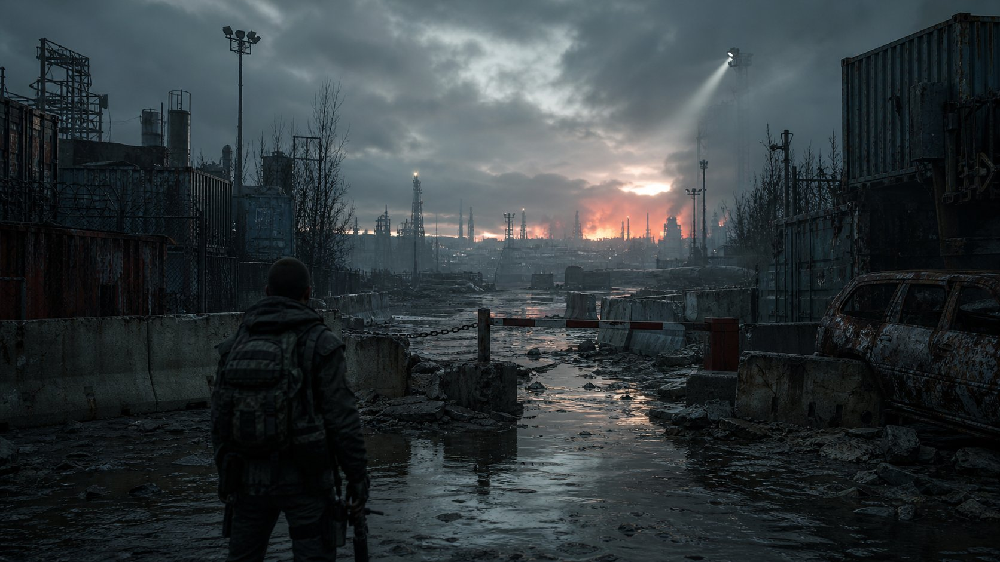

1. Ce qu'est vraiment No Man's Land
No Man's Land n'est pas une carte. C'est un mode PvE à tickets : vous entrez avec un ticket et un équipement imposé par le mode, vous piller la carte en rotation, et vous repartez avec tout votre sac — sans qu'aucun joueur adverse puisse vous tuer. Officiel
Le mode a été introduit par Morefun en Saison 5 : Distortion (2 avril 2026), aux côtés du Warlord Tournament. L'annonce officielle le décrit sans ambiguïté : « No Man's Land — Farm, Valley, TV Station rotate : Run solo or only with your squad in a pure PvE mode with fixed loadout. Tickets needed for entry. » Officiel
La fiche du premier anniversaire du jeu résume l'intention : « scavenge, survive, and extract with full pack loot, all without the threat of hostile operatives ». Autrement dit : on vous retire la peur, on vous laisse le loot. Officiel
2. Les quatre règles qui changent tout
| Règle | Tactical Ops | No Man's Land |
|---|---|---|
| PvP | Oui — tout le monde tire à tout le monde | Non. Aucun opérateur adverse ne peut vous tuer |
| Équipement | Votre stash, votre budget | Imposé par le mode, selon son palier de difficulté |
| Entrée | Gratuite | 1 ticket par run |
| Extraction | Case sécurisée ou clé pour les rouges | Pack complet conservé, rien ne peut vous le prendre |
| Équipe | Matchmaking libre | Solo, ou votre propre escouade uniquement |
| Qui peut vous tuer | Joueurs + IA | IA uniquement : Militants, Élites, et zombies en S7 |
Pourquoi c'est le mode le plus rentable du jeu
Un ticket ne se perd pas quand vous mourez : vous perdez le run, pas votre armure. Combiné au pack complet conservé, chaque ticket est une mise risquée quasi nulle pour des dizaines de milliers de Koen, des munitions, des matériaux et parfois un rouge. Communautaire
3. La rotation : Farm, Valley, TV Station
No Man's Land ne se joue pas sur les six cartes. Trois seulement tournent en mode PvE, et elles tournent en rotation : le mode ne vous laisse pas choisir votre terrain à chaque run. Ce sont exactement les trois cartes les plus « core » du jeu.
- Farm — la plus petite et la plus lisible. Ideal pour roder un extract et apprendre les rotations. Guide Farm →
- Valley — la plus dense en loot et en points d'intérêt. C'est ici que se trouve le fameux Small Factory, dont les boîtes à outils sont la source de rouges la plus citée en No Man's Land. Guide Valley →
- TV Station — la plus rapide. Parfaite pour les runs de routine et de farm de composants. Guide TV Station →
Les trois autres cartes — Northridge, Armory et Airport — ne sont pas disponibles en No Man's Land standard. Officiel
4. Les tickets : où les obtenir
Un run = un ticket. Deux objets coexistent : les No Man's Land Tickets (version standard) et les Zombie / Biohazard No Man's Land Passes (variante infectée de la Saison 7). Ils s'obtiennent presque tous gratuitement.
| Source | Ce que ça donne | Période |
|---|---|---|
| Événement de connexion d'octobre 2026 | 2 400 Bonds limités + 14 tickets Zombie No Man's Land en se connectant 7 jours | 1er – 21 octobre 2026 |
| Festival Biohazard & Bountiful Autumn | 3 passes Biohazard à la connexion, puis 1 passe Zombie à chaque palier de tâches (4, 8, 16) chaque semaine | Depuis le 24 septembre 2026 |
| Drops en mode Infected Area | Chance d'obtenir des passes Zombie No Man's Land pendant un raid | Toute la durée de l'événement |
| Tactical Ops classiques | Tickets No Man's Land standards, historiquement échangeables hors raid | En continu |
| Événement du 1er anniversaire | 36 tickets No Man's Land au total | Début 2026 |
Le bon réflexe
Pendant une fenêtre d'événement, vous n'avez rien à acheter. Connectez-vous chaque jour et videz vos tâches quotidiennes : les passes s'accumulent tout seuls. Les Combat Pass n'ont jamais été le bon canal pour les tickets.
5. La variante Zombies No Man's Land (Saison 7)
La Saison 7 : Utopia a transformée Kamona en foyer d'infection. Le mode a donc une variante saisonnière : Zombies No Man's Land, qui se joue sur les cartes infectées et où vous nettoyez des hordes de zombies en même temps que vous pillez. L'officialisation de la saison : « Season 7 has begun, and zombies are running rampant across Kamona! It's time to join forces, fight back the horde, and save Kamona! » Officiel
La variante s'inscrit dans la série d'événements Biohazard qui distribue aussi l'ensemble de tenue Hazmat, la mechanics de Supplies Drops 2.0 et le collectionnable Lunar Soil Sample. Le Merit Challenge de l'événement convertit votre meilleur score hebdomadaire de Merit en Koen × 3, jusqu'à 3 000 000 Koen par semaine — c'est le levier principal du mode, bien plus rentable que les rouges. Communautaire
Le mode applique le Mode-Based Ammo and Gear Cap de la saison : Tier 4 maximum en Normal, Tier 5 en Lockdown, et le RNG de pénétration des armures T5/T6 a été supprimé. Comme l'équipement est imposé, vous êtes de toute façon dans le plafond du palier — traitez ce mode comme un run de butin, jamais comme un run de démonstration d'équipement. Officiel
Comment on s'y prend concrètement
Le mode a été entièrement simplifié par rapport au Hostile Sector de S6. Les scavs sont très mauvais tireurs et infligent très peu de dégâts : la seule chose qui vous pose vraiment problème, ce sont les hordes de zombies.
- Ball ammunition : 120 à 180 balles de T3 suffisent. Si vous avez investi dans l'arbre de recherche, ce nombre peut être encore plus bas. La munitions T5 y est du gaspillage pur.
- Votre cible principale : les bio-échantillons. Leur qualité de loot est comparable à celle d'un petit coffre, et ils contiennent des objets de valeur ou des échantillons purs pour l'arbre.
- Sans Hyper Intuition, les trouver est laborieux. Le passif vous montre les empreintes bleues ; il transforme un raid en fouille aléatoire.
- Les caisses de mission donnent des échantillons supplémentaires et de l'équipement de valeur : terminez-les, elles paient.
- Les boîtes à documents et les tiroirs de bureau contiennent les plans du workbench. Si vous enlistez pour le craft, c'est là qu'ils sont.
- Le taux de loot global est proche de celui du mode Lockdown. Vous pouvez utiliser des clés, mais rien ne garantit un objet de valeur : le mode est calme, pas généreux.
Source : base de référence communautaire, guide loot et progression S7 (abibuilder.com/guides/s7-loot-guide). Donnée documentée, non publiée par l'éditeur.
6. Ce que le mode rapporte vraiment
La question qui revient sur Reddit et sur les forums : « ça vaut le coup ? ». Réponse nuancée, et les chiffres de la communauté sont explicites.
- Les Koen et l'or sont le revenu fiable. Plusieurs dizaines de milliers de Koen par run correct. C'est la base.
- Les rouges ne sont jamais garantis. Les rapports de la semaine sur r/ArenaBreakoutInfinite vont d'« un rouge environ tous les 4 raids » à « un rouge en deux semaines », en passant par « 7 runs, pas un seul rouge, mais une tonne de comics et 35k d'or ». Communautaire
- Les rouges viennent des conteneurs, pas d'un type précis de coffre. Un joueur qui en a sorti deux d'un coup les a trouvés « dans des boîtes à outils du Small Factory » — pas dans un coffre précis. Donc : pillez toute la carte, ne foncez pas sur les gros safes. Communautaire
- Le ratio Koen par ticket est le vrai rendement. Consommables, munitions et objets divers s'accumulent sans risque : c'est ce que vous.runneriez dans un raid classique.
L'erreur de débutant
Passer dix tickets d'affilée en espérant le rouge. Le mode ne « fait pas » de rouge : il fait du Koen massif et régulier. Le rouge est un bonus, jamais le plan.
7. La stratégie qui marche
En No Man's Land, la méta communautaire est simple et bon marché. Sur r/ArenaBreakoutInfinite, face à la question « c'est quoi la méta sur ce mode maintenant ? », la réponse de référence : « C'est des zombies et des scavs, donc prends la munition la moins chère avec le plus de dégâts sur la chair, et prends-en beaucoup. Armure pas chère, gros sac. C'est tout ce que j'ai. » Communautaire
- Ammo-first. La munition la moins chère avec le maximum de dégâts sur la chair (dum-dum, buckshot) et en grande quantité. Contre les zombies et les IA, la économie de munitions tue plus de raids que la précision.
- Armure légère. Contre de l'IA, la protection et le poids sont du pur gaspillage : vous n'avez personne à percer. Gardez de la place pour le loot.
- Le plus gros sac possible. Un sac plein sort en une run ce qu'un raid classique sort en trois.
- Parcourez, ne rush pas. Les conteneurs valent plus que les safes, et les « safes » sont précisément ce que les IA gardent.
- Quittez avant la nuit. Le mode a un cycle de jour/nuit : les IA deviennent plus actives, et votre butin ne vaut plus le risque du ticket perdu.
8. FAQ
No Man's Land est-il une carte ?
Non. C'est un mode qui fait tourner trois cartes existantes en rotation. C'est la confusion la plus fréquente, y compris sur les wikis : No Man's Land n'a ni carte propre, ni ses propres extractions, ni sa propre table de loot.
Peut-on jouer en équipe ?
Oui, mais uniquement avec sa propre escouade. Il n'y a pas de matchmaking : pas de groupe avec des inconnus.
Les tickets sont-ils payants ?
Ils sont le plus souvent offerts par les événements (connexion, tâches, drops en Infected Area). Les tickets standards tombent aussi en Tactical Ops et sont échangeables hors raid.
Garde-t-on le butin si on meurt ?
Non. Si l'IA vous tue, vous perdez le butin de la run — c'est le seul vrai risque du mode, et il ne vient jamais d'un joueur.
Est-ce le meilleur moyen de farm des Koen ?
C'est le moyen le plus rentable en valeur par ticket, parce que rien ne peut vous voler votre extraction. Pour le Merit de la Zombie Research, en revanche, les modes dédiés (Zombie Endless) sont plus efficaces.